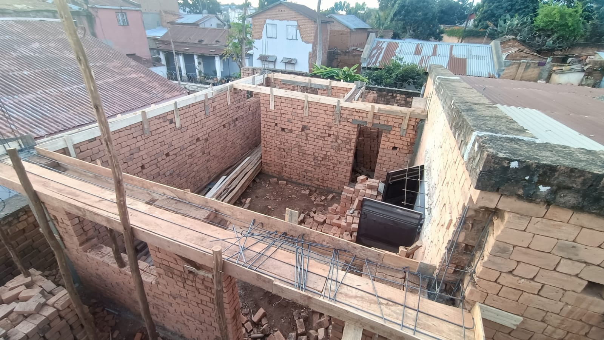
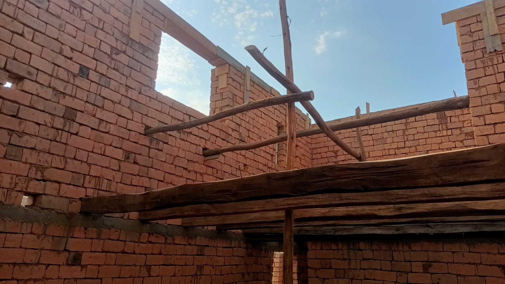
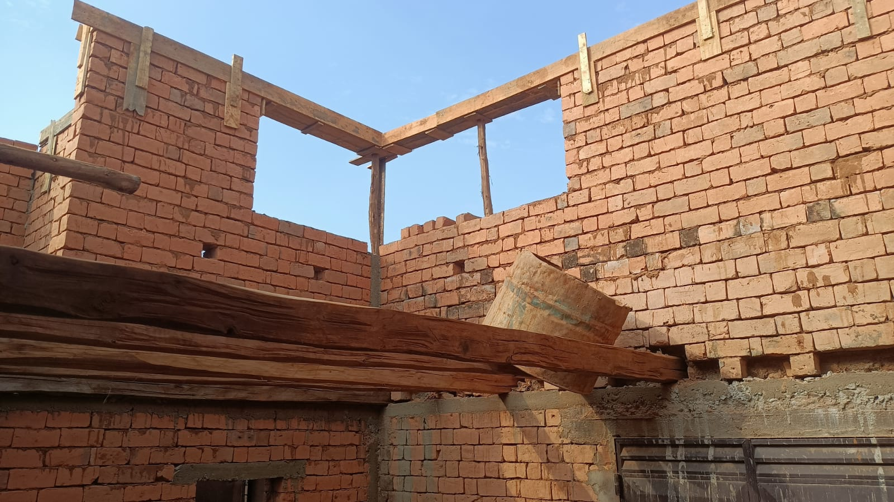

À travers ce projet, l’objectif était de maîtriser chaque étape du processus : étude, plans, modélisation 3D, préparation technique et construction. La maquette numérique sert ainsi de lien entre le projet imaginé et sa réalisation concrète sur le chantier.
Chantier en cours
De la maquette au terrain
Quelques vues de l’avancement du chantier, illustrant le passage de la conception numérique à la réalisation.



Modèle BIM
Maquette IFC
Le fichier IFC du projet peut être ouvert dans un logiciel ou une visionneuse compatible.